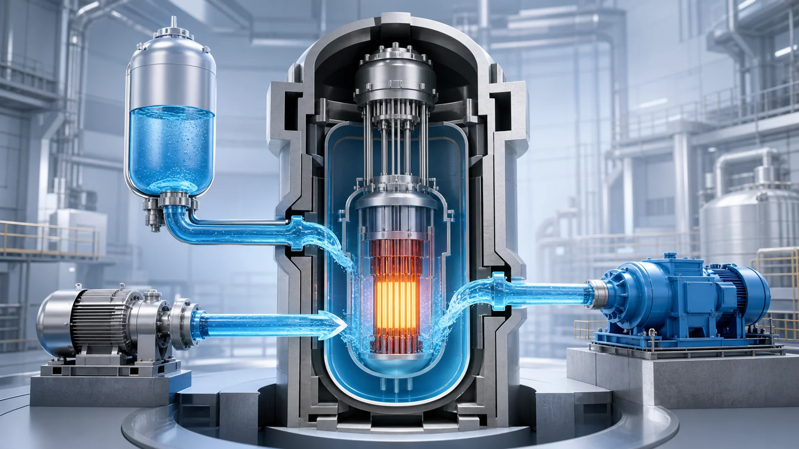
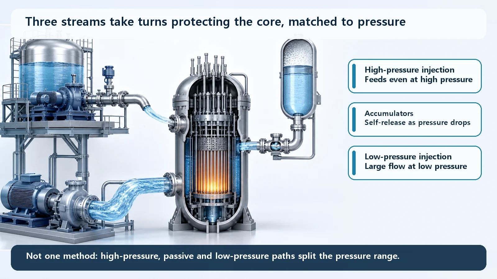
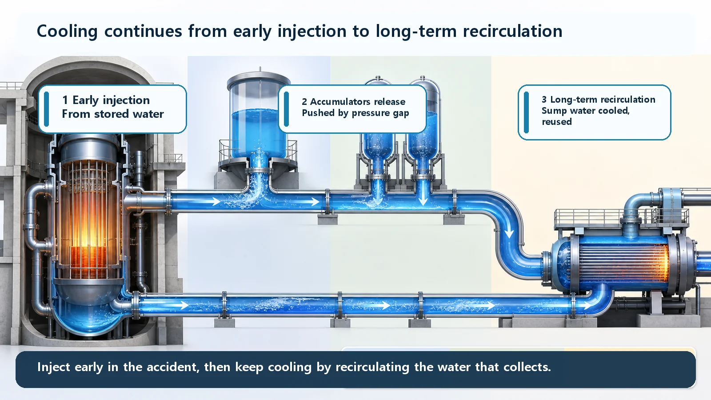

Reactor Types & Plant Systems · 193
The Water Arrives Before Anyone Presses a Button — How the Safety Injection System (SIS) Works
Borated water, three injection paths split by pressure, and an accumulator that acts like an airbag with no power or operator action.

The Safety Injection System (SIS) automatically pushes borated water into a reactor core when coolant runs short, as in a loss-of-coolant accident. It cools the fuel and, because boron absorbs neutrons, keeps the core subcritical at the same time. Three methods split the work by pressure: high-pressure injection pumps, passive nitrogen-pressurized accumulators, and high-flow low-pressure injection pumps.
Why a reactor needs water even after shutdown
Control rods stop the fission chain reaction almost instantly, but the radioactive material built up during operation keeps giving off decay heat for quite a while, strong at first and then gradually declining. To keep removing it, the fuel must stay covered with water.
Normally the reactor coolant system does this. If a pipe leaks or breaks and coolant escapes, a loss-of-coolant accident (LOCA), the water level drops and the fuel risks being uncovered. The SIS exists to refill water faster than it leaks out, automatically, without waiting for anyone to press a button.

Three water paths, sized to the leak
Like a home leak, the right response depends on the size of the break, because the break size determines how far reactor pressure falls.
| Method | When it works | Character |
|---|---|---|
| High-pressure safety injection | Small leaks; reactor pressure stays high | Powerful pumps, relatively small flow |
| Accumulators (safety injection tanks) | Pressure falls below the tank's pressure | Passive: nitrogen pushes water through check valves; no pump, power or operator |
| Low-pressure safety injection | Large breaks; pressure has plunged | Pumps that can't beat high pressure but deliver very large flow |
The accumulator is the star. It is a large tank of borated water pressurized with nitrogen and kept behind check valves (valves that open in one direction only). When reactor pressure drops below the tank's pressure, the valves open on the pressure difference alone and the nitrogen shoves the water toward the core. Like a car's airbag, it acts by itself once a set threshold is crossed. Equipment that works on physical laws alone, without power, is called passive.
None of the three is "the" answer. Because pressure behaves differently in every accident, the roles are divided by pressure range, and because the means are independent, another can take over if one fails. That is defense in depth and redundancy in practice.
Why borated water, not plain water
Boron swallows neutrons. A chain reaction survives only while neutrons keep passing the baton; if boron snatches them, the reaction can't easily restart. So safety injection water does two jobs at once: it cools the fuel and it keeps the core subcritical. That is what separates safety injection from simply topping up water.
Where the water keeps coming from

At first the system draws borated water from a large storage tank prepared in advance, the refueling water storage tank. When that runs low, pumps lift the water that leaked out and collected on the containment floor (the sump) and send it back to the core. Switching from "pouring in" to "cycling around" lets cooling continue over hours and days.
Things that look similar but aren't
Everyday makeup. Tiny normal losses are made up by the chemical and volume control system. Safety injection handles accident-level, rapid water loss.
Containment spray. Safety injection sends water into the core. Containment spray sprays water into the containment building's interior to lower pressure and temperature and wash radioactive material out of the air.
High vs low pressure. Neither is better; they cover different pressure ranges, and both are needed to cover a wide range of accidents.
Written down very simply
Water going in ≥ water leaking out + water boiled off by decay heat
As long as this holds, the core stays covered. The SIS's job is to keep it from breaking, whatever the size of the accident. Real safety analysis uses far more detailed thermal-hydraulic calculations, but the big picture is in this one line.
Key takeaways
The SIS, the core of the emergency core cooling system, keeps a reactor core covered and subcritical after coolant is lost. High-pressure injection, passive accumulators and low-pressure injection divide the pressure range between them, stored borated water comes first, and recirculation of sump water sustains cooling for the long term.